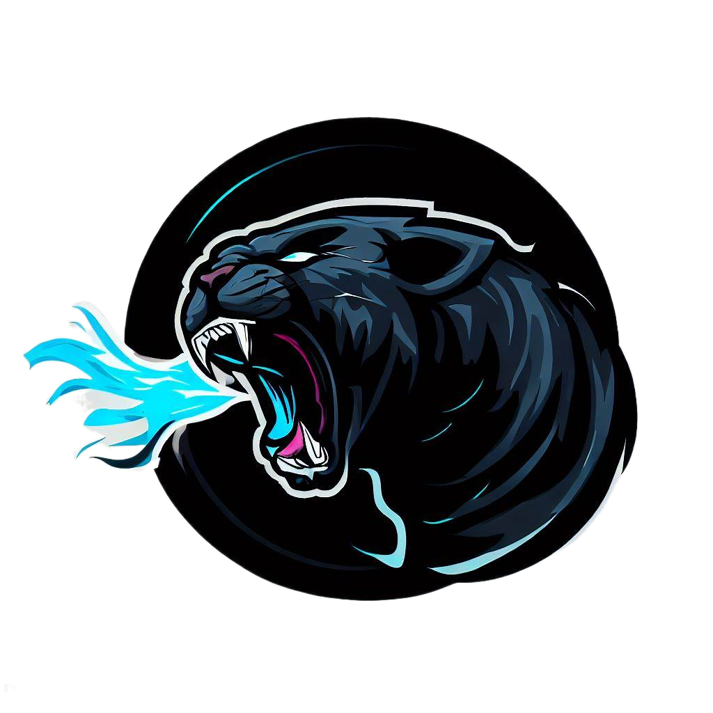

<link href="/../../node_modules/dist/css/bootstrap.min.css" rel="stylesheet">

    <style>
      .bd-placeholder-img {
        font-size: 1.125rem;
        text-anchor: middle;
        -webkit-user-select: none;
        -moz-user-select: none;
        user-select: none;
      }

      @media (min-width: 768px) {
        .bd-placeholder-img-lg {
          font-size: 3.5rem;
        }
      }

      .b-example-divider {
        width: 100%;
        height: 3rem;
        background-color: rgba(0, 0, 0, .1);
        border: solid rgba(0, 0, 0, .15);
        border-width: 1px 0;
        box-shadow: inset 0 .5em 1.5em rgba(0, 0, 0, .1), inset 0 .125em .5em rgba(0, 0, 0, .15);
      }

      .b-example-vr {
        flex-shrink: 0;
        width: 1.5rem;
        height: 100vh;
      }

      .bi {
        vertical-align: -.125em;
        fill: currentColor;
      }

      .nav-scroller {
        position: relative;
        z-index: 2;
        height: 2.75rem;
        overflow-y: hidden;
      }

      .nav-scroller .nav {
        display: flex;
        flex-wrap: nowrap;
        padding-bottom: 1rem;
        margin-top: -1px;
        overflow-x: auto;
        text-align: center;
        white-space: nowrap;
        -webkit-overflow-scrolling: touch;
      }

      .btn-bd-primary {
        --bd-violet-bg: #712cf9;
        --bd-violet-rgb: 112.520718, 44.062154, 249.437846;

        --bs-btn-font-weight: 600;
        --bs-btn-color: var(--bs-white);
        --bs-btn-bg: var(--bd-violet-bg);
        --bs-btn-border-color: var(--bd-violet-bg);
        --bs-btn-hover-color: var(--bs-white);
        --bs-btn-hover-bg: #6528e0;
        --bs-btn-hover-border-color: #6528e0;
        --bs-btn-focus-shadow-rgb: var(--bd-violet-rgb);
        --bs-btn-active-color: var(--bs-btn-hover-color);
        --bs-btn-active-bg: #5a23c8;
        --bs-btn-active-border-color: #5a23c8;
      }
      .bd-mode-toggle {
        z-index: 1500;
      }
    </style>

    

    <svg xmlns="http://www.w3.org/2000/svg" style="display: none;">
      <symbol id="check2" viewBox="0 0 16 16">
        <path d="M13.854 3.646a.5.5 0 0 1 0 .708l-7 7a.5.5 0 0 1-.708 0l-3.5-3.5a.5.5 0 1 1 .708-.708L6.5 10.293l6.646-6.647a.5.5 0 0 1 .708 0z"/>
      </symbol>
      <symbol id="circle-half" viewBox="0 0 16 16">
        <path d="M8 15A7 7 0 1 0 8 1v14zm0 1A8 8 0 1 1 8 0a8 8 0 0 1 0 16z"/>
      </symbol>
      <symbol id="moon-stars-fill" viewBox="0 0 16 16">
        <path d="M6 .278a.768.768 0 0 1 .08.858 7.208 7.208 0 0 0-.878 3.46c0 4.021 3.278 7.277 7.318 7.277.527 0 1.04-.055 1.533-.16a.787.787 0 0 1 .81.316.733.733 0 0 1-.031.893A8.349 8.349 0 0 1 8.344 16C3.734 16 0 12.286 0 7.71 0 4.266 2.114 1.312 5.124.06A.752.752 0 0 1 6 .278z"/>
        <path d="M10.794 3.148a.217.217 0 0 1 .412 0l.387 1.162c.173.518.579.924 1.097 1.097l1.162.387a.217.217 0 0 1 0 .412l-1.162.387a1.734 1.734 0 0 0-1.097 1.097l-.387 1.162a.217.217 0 0 1-.412 0l-.387-1.162A1.734 1.734 0 0 0 9.31 6.593l-1.162-.387a.217.217 0 0 1 0-.412l1.162-.387a1.734 1.734 0 0 0 1.097-1.097l.387-1.162zM13.863.099a.145.145 0 0 1 .274 0l.258.774c.115.346.386.617.732.732l.774.258a.145.145 0 0 1 0 .274l-.774.258a1.156 1.156 0 0 0-.732.732l-.258.774a.145.145 0 0 1-.274 0l-.258-.774a1.156 1.156 0 0 0-.732-.732l-.774-.258a.145.145 0 0 1 0-.274l.774-.258c.346-.115.617-.386.732-.732L13.863.1z"/>
      </symbol>
      <symbol id="sun-fill" viewBox="0 0 16 16">
        <path d="M8 12a4 4 0 1 0 0-8 4 4 0 0 0 0 8zM8 0a.5.5 0 0 1 .5.5v2a.5.5 0 0 1-1 0v-2A.5.5 0 0 1 8 0zm0 13a.5.5 0 0 1 .5.5v2a.5.5 0 0 1-1 0v-2A.5.5 0 0 1 8 13zm8-5a.5.5 0 0 1-.5.5h-2a.5.5 0 0 1 0-1h2a.5.5 0 0 1 .5.5zM3 8a.5.5 0 0 1-.5.5h-2a.5.5 0 0 1 0-1h2A.5.5 0 0 1 3 8zm10.657-5.657a.5.5 0 0 1 0 .707l-1.414 1.415a.5.5 0 1 1-.707-.708l1.414-1.414a.5.5 0 0 1 .707 0zm-9.193 9.193a.5.5 0 0 1 0 .707L3.05 13.657a.5.5 0 0 1-.707-.707l1.414-1.414a.5.5 0 0 1 .707 0zm9.193 2.121a.5.5 0 0 1-.707 0l-1.414-1.414a.5.5 0 0 1 .707-.707l1.414 1.414a.5.5 0 0 1 0 .707zM4.464 4.465a.5.5 0 0 1-.707 0L2.343 3.05a.5.5 0 1 1 .707-.707l1.414 1.414a.5.5 0 0 1 0 .708z"/>
      </symbol>
    </svg>

    
    

    


<main>

  <section class="py-5 text-center container">
    <div class="row py-lg-5">
      <div class="col-lg-6 col-md-8 mx-auto">
        <h1 class="fw-light">Bienvenido a mis proyectos</h1>
        <p class="lead text-body-secondary">Aqui te puedo contar mi experiencia, que es lo que puedo hacer, tecnologias que domino y que es lo que he hecho a lo largo de mi carrera desde que he empezado como desarrollador desde proyectos pequeños a grandes proyectos con mucho codigo y amor ♡♡ </p>
      </div>
    </div>
  </section>

  <div class="album py-5 bg-body-tertiary">
    <div class="container">

      <div class="row row-cols-1 row-cols-sm-2 row-cols-md-3 g-3">
        <div class="col">
          <div class="card shadow-sm">
            
            <div class="card-body">
              <p class="card-text fw-bold">Aire Acondicionado Cat Black</p>
              <p class="card-text">Aire Acondicionado Cat Black es mi projecto mas grande hasta ahora, es una pagina web de ecommerce para la empresa de mi padre por razones de seguridad no puedo compartir el codigo fuente.</p>
              <div class="d-flex justify-content-between align-items-center">
                <a class="icon-link icon-link-hover disabled" href="#" target="_blank">
                 
                  <svg xmlns="http://www.w3.org/2000/svg" width="16" height="16" fill="currentColor" class="bi bi-arrow-right" viewBox="0 0 16 16">
                    <path fill-rule="evenodd" d="M1 8a.5.5 0 0 1 .5-.5h11.793l-3.147-3.146a.5.5 0 0 1 .708-.708l4 4a.5.5 0 0 1 0 .708l-4 4a.5.5 0 0 1-.708-.708L13.293 8.5H1.5A.5.5 0 0 1 1 8z"/>
                  </svg>
                </a>
                <small class="text-body-secondary">9 mins</small>
              </div>
            </div>
          </div>
        </div>
        <div class="col">
          <div class="card shadow-sm">
           
            <div class="card-body">
              <p class="card-text fw-bold">Portafolio Personal</p>
              <p class="card-text">Te dejo el codigo fuente de este portafolio personal, puedes editarlo si quieres y usarlo como portafolio sientete libre de modificarlo si gustas, esta hecho con bootstrap 5 y angular</p>
              <div class="d-flex justify-content-between align-items-center">
                <a class="icon-link icon-link-hover" href="https://github.com/kevinfonttlizama/kevinfonttlizama.github.io" target="_blank">
                  Ir al link
                  <svg xmlns="http://www.w3.org/2000/svg" width="16" height="16" fill="currentColor" class="bi bi-arrow-right" viewBox="0 0 16 16">
                    <path fill-rule="evenodd" d="M1 8a.5.5 0 0 1 .5-.5h11.793l-3.147-3.146a.5.5 0 0 1 .708-.708l4 4a.5.5 0 0 1 0 .708l-4 4a.5.5 0 0 1-.708-.708L13.293 8.5H1.5A.5.5 0 0 1 1 8z"/>
                  </svg>
                </a>
                <small class="text-body-secondary">9 mins</small>
              </div>
            </div>
          </div>
        </div>
        <div class="col">
          <div class="card shadow-sm">
            
            <div class="card-body">
              <p class="card-text fw-bold">Python projects</p>
              <p class="card-text">Aqui encontraras mis guias personalizadas de estudio y mis investigaciones personales de python es un repositorio de Github especialmente creado para esto para que puedas ver mis habilidades.</p>
              <div class="d-flex justify-content-between align-items-center">
                <a class="icon-link icon-link-hover" href="https://github.com/kevinfonttlizama/python-tests" target="_blank">
                  Ir al link
                  <svg xmlns="http://www.w3.org/2000/svg" width="16" height="16" fill="currentColor" class="bi bi-arrow-right" viewBox="0 0 16 16">
                    <path fill-rule="evenodd" d="M1 8a.5.5 0 0 1 .5-.5h11.793l-3.147-3.146a.5.5 0 0 1 .708-.708l4 4a.5.5 0 0 1 0 .708l-4 4a.5.5 0 0 1-.708-.708L13.293 8.5H1.5A.5.5 0 0 1 1 8z"/>
                  </svg>
                </a>
                <small class="text-body-secondary">9 mins</small>
              </div>
            </div>
          </div>
        </div>

        <div class="col">
          <div class="card shadow-sm">
            
            <div class="card-body">
              <p class="card-text fw-bold">Javascript projects</p>
              <p class="card-text">Aqui encontraras el repositorio de Javascript donde guardo guias de javascript y algunos ejercicios resueltos de algunas pruebas que desarrollado a lo largo del tiempo postulando a empleos..</p>
              <div class="d-flex justify-content-between align-items-center">
                <a class="icon-link icon-link-hover" href="https://github.com/kevinfonttlizama/Javascript-tests" target="_blank">
                  Ir al link
                  <svg xmlns="http://www.w3.org/2000/svg" width="16" height="16" fill="currentColor" class="bi bi-arrow-right" viewBox="0 0 16 16">
                    <path fill-rule="evenodd" d="M1 8a.5.5 0 0 1 .5-.5h11.793l-3.147-3.146a.5.5 0 0 1 .708-.708l4 4a.5.5 0 0 1 0 .708l-4 4a.5.5 0 0 1-.708-.708L13.293 8.5H1.5A.5.5 0 0 1 1 8z"/>
                  </svg>
                </a>
                <small class="text-body-secondary">9 mins</small>
              </div>
            </div>
          </div>
        </div>
        <div class="col">
          <div class="card shadow-sm">
           
            <div class="card-body">
              <p class="card-text fw-bold">Github repositories</p>
              <p class="card-text">Aqui estan todos mis repositorios de Github donde estan todos mis projectos personales, algunos son publicos y otros no por razones de seguridad, hecha un vistazo!</p>
              <div class="d-flex justify-content-between align-items-center">
                <a class="icon-link icon-link-hover" href="https://github.com/kevinfonttlizama?tab=repositories" target="_blank">
                  Ir al link
                  <svg xmlns="http://www.w3.org/2000/svg" width="16" height="16" fill="currentColor" class="bi bi-arrow-right" viewBox="0 0 16 16">
                    <path fill-rule="evenodd" d="M1 8a.5.5 0 0 1 .5-.5h11.793l-3.147-3.146a.5.5 0 0 1 .708-.708l4 4a.5.5 0 0 1 0 .708l-4 4a.5.5 0 0 1-.708-.708L13.293 8.5H1.5A.5.5 0 0 1 1 8z"/>
                  </svg>
                </a>
                <small class="text-body-secondary">9 mins</small>
              </div>
            </div>
          </div>
        </div>
      </div>
    </div>
  </div>

</main>


    <script src="/../../node_modules/dist/js/bootstrap.bundle.min.js"></script>

      

